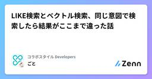
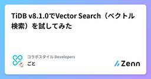

コラボスタイル Developersのフィード
https://zenn.dev/p/collabostyle
「ワークスタイルの未来を切り拓く」を理念に掲げ、リアルとデジタルの2つの働く場に向けた事業展開に留まらず、自社が率先して新しいワークスタイルに挑戦し、発信を行うことでワークスタイルの未来を切り拓いていきます。
フィード
Claude in Chrome 導入紹介
コラボスタイル Developersのフィード
はじめにClaude Codeにコードを書いてもらうと、ユニットテストもパスするし要件はおそらく満たせている。でも実際にアプリケーション画面を開いたら意図通り動くか、までは結局人の目で確認しないといけないと感じたことはないでしょうか。実はClaude CodeはChrome拡張機能を提供しており、これを経由してブラウザ操作が可能になる仕組みがあります。これを使うことで実装機能に対しブラウザアクセスしたり、動作検証を任せることができます。この記事では、まずGoogle検索という誰でも再現できる題材でClaude in Chromeの基本操作を体験し、そのうえで実際の開発ワークフロ...
6日前

LIKE検索とベクトル検索、同じ意図で検索したら結果がここまで違った話
コラボスタイル Developersのフィード
何を比較したかったか「データベースに関する技術書を探したい」——この検索意図に対して、LIKE検索とベクトル検索で結果がどう変わるのか気になったので検証してみました。パフォーマンス（速度）ではなく、「検索結果の中身（精度）」に着目しています。同じ検索意図のクエリを投げた際、どちらがより「ユーザーの欲しいもの」を返してくれるのかを試した記録です。 検証環境TiDB: v8.5.0（Docker / ローカル環境）ベクトル仕様: 3次元ベクトル（挙動を視覚的に理解しやすくするため最小次元で設定）データ件数: 17レコードのテスト用テーブル テストデータの設...
8日前

TiDB v8.1.0でVector Search（ベクトル検索）を試してみた
コラボスタイル Developersのフィード
MySQL互換の分散SQLデータベース「TiDB」で、ベクトル検索（Vector Search）とHNSWインデックスを試してみたので、ローカル環境で検証した際の手順と実行計画のログをまとめておきます。専用のベクトルDB（PineconeやMilvus等）を別途立てずに、一般的なRDBのテーブル内で VECTOR 型や VEC_COSINE_DISTANCE がどう動くのかを確認するのが目的です。 検証環境TiDB: v8.1.0（ローカル Docker）ツール: DBeaver / MySQL Clientまずはバージョン確認から。SELECT VERSION(...
8日前

人との関わりでキャリアが明確になった：新卒エンジニア7月の振り返り
コラボスタイル Developersのフィード
2026年4月に入社しました、tokuです。以前に引き続き7月の振り返りブログとなります。今回から事実ベースの書き方から変えて、感じたことを書くコラム的な内容にしています。社内や学生向けの発信となっているので、見てもらえるとありがたいです。 7月の概要4月から一月ごとにテーマを設定して研修に励んできました。4月は「全社研修」、5月は「プロダクト概要を知る」、6月は「プロダクト仕様を知る」に取り組んできました。7月からは「現場を知る」をテーマに、OJTに移行しました。責任の小さいところから、少しずつ実装を任せていただいています。また、今月は人との関わりを通じてキャリアの方...
11日前
PostgreSQL→TiDB移行のRLSを安全・高パフォーマンスに代替する方法
コラボスタイル Developersのフィード
はじめにPostgreSQLからMySQL互換の分散SQLデータベース「TiDB」へ移行する際、大きな障壁となるのがRLS（行レベルセキュリティ）の扱いです。マルチテナントSaaSなどでデータの完全分離に重宝されるRLSですが、残念ながらTiDB（MySQL互換）にはネイティブのRLS機能が存在しません。参考Views | TiDB Docshttps://docs.pingcap.com/ja/tidb/stable/views/?utm_source=chatgpt.com本記事では、PostgreSQLのRLSをTiDBへ移行する際、なぜDBレイヤー（Vie...
21日前
Keyball39のOLEDをカスタマイズしてWPMやレイヤーに反応するスピログラフアニメーションを表示させてみた
コラボスタイル Developersのフィード
はじめに自作キーボードでは見た目や打鍵感にこだわる人は多いですが、OLEDはデフォルトのまま使っているケースがほとんどではないでしょうか。今回はそのOLEDに着目して、WPMやレイヤーに反応するスピログラフアニメーションを実装してみました。こちらが実際の動画になります。実際に動かしている様子。 環境構築QMKの実行環境がない場合は公式ドキュメントを参照して構築してください。https://docs.qmk.fm/newbs_getting_started次に、ディレクトリを作成して以下の二つのリポジトリをクローンしてください。OLEDカスタマイズを実装したvia_...
23日前
実務未経験でも楽しめた、Kiro実践ワークショップ体験レポート - AWS Summit Japan 2026
コラボスタイル Developersのフィード
はじめにもう3週間ほど経ってしまっていますが...AWS Summit Japan 2026に参加してきました！Summitでは基調講演やVillage、企業ブースなどのコンテンツがありました。今回は後配信などで見返すことができないコンテンツを体験しようと思い、Villageやワークショップ、企業ブースなどに参加しました。その中でも特に印象に残っているKiroワークショップのことについて書くことにしました。この記事では、ワークショップを体験してどんな気づきがあったかを書いていきます。よければ、見ていただけると幸いです。 あなたの開発プロジェクトを進化させるKiro...
23日前
6月の振り返り~新卒としてイベントに参加して自分の実力を相対的に認識できた話
コラボスタイル Developersのフィード
2026年の4月に入社しましたtokuです。3回目の一ヶ月振り返りブログになります。社内の方や、コラボスタイルの新卒がどんな風に過ごしているか知りたい方に向けて書いているのでよければ見ていってもらえると嬉しいです。 １日の流れ標準的な１日のスケジュールは以下の通りです。イベントや外部研修など特別なことがない時はこのように進めています。標準的な１日のスケジュール時間内容9:30出社・連絡確認9:45グループ朝会10:00個人学習12:00お昼休憩13:00研修18:15日報18:30退勤 6月ので...
25日前
きのこカンファレンス~私たちはこの先どう生きのこるのか~
コラボスタイル Developersのフィード
先日、きのこカンファレンスに参加しました。https://kinoko-conf.dev/index.html今年、私はきのこカンファレンスのプロポーザルに応募しましたが、結果は不採択でした。採択された方のプロポーザルを見て、全てがその人でしか話せない内容であり納得をすると同時に悔しさを感じました。次に応募するとき、自分はどんなテーマで話せるのか。自分だからこそ話せることは何なのか、聞いてくれる人にとって価値のある話にするには何を深めていけばいいのか。そんなヒントを探すために、今回きのこカンファレンスに参加しました。今回は会社のブースにも立ち、いくつかのセッションも聞きました。...
1ヶ月前
Claude Code で Atlassian MCP サーバーを登録して Jira との接続確認を行う
コラボスタイル Developersのフィード
Claude Code から Jira の課題を検索・参照できるようにするための設定手順です。意図しないプロジェクトへの干渉を防ぐための安全対策（対象プロジェクトの限定）の CLAUDE.md への記載例と確認手順を簡単にまとめています。 1. Atlassian MCPサーバーの設定 (atlassian-http)Atlassian公式のリモートMCP（Model Context Protocol）サーバーである Streamable HTTP をユーザースコープで登録します。ターミナルで以下のコマンドを実行します。claude mcp add --transport h...
1ヶ月前
「エンジニアがこの先生きのこるためのカンファレンス2026」に登壇・参加して
コラボスタイル Developersのフィード
2026年6月28日に開催された「エンジニアがこの先生きのこるためのカンファレンス2026」に、登壇者として、また所属するコラボスタイルのスポンサーブース担当として加わってきました。本記事は、自分が話したこと・話せなかったこと、聞いたセッションから得た学び、そして会場やブースで感じた熱気を、社内外で共有するためにまとめた振り返りです。 イベント全体の活気300名以上の参加者が集まり、そのうち100名以上が全てのスポンサーブースを回ってくれたとのことでした。スポンサーブースのエリアは人が溢れかえていて、熱心で関心を持ってくれる参加者が多いイベントでした。会場の日本科学未来館もと...
1ヶ月前
AWS Summit Japan 2026 参加レポート - 現地で見直した技術判断
コラボスタイル Developersのフィード
はじめに2026年6月25日（木）・26日（金）の2日間、幕張メッセで開催された「AWS Summit Japan 2026」に参加してきました。アマゾン ウェブ サービス ジャパン合同会社が主催する、日本最大級のAWS学習イベントです。今回はこのうち、26日（金）のDay 2のみに参加してきました！Day 1に参加したメンバーから、入場までに1時間以上の待ち時間が発生していたと聞いていました。ですが、Day 2は新規入場者が少ないためか受付がスムーズで、入場まで3分半ほどで済みました。今回はセッションへの参加よりも、ブース巡りや出展者・参加者とのコミュニケーションを重視して...
1ヶ月前
AWS Summit Japan 2026 - 日本に上陸したて、Gravition5のチップを見てきました！ -
コラボスタイル Developersのフィード
6/25-26の2Daysで開催されたAWS Summitへ参加して参りました。日本に上陸したばかりのGraviton5のチップが2箇所で展示されていました！※2枚目はちょうどお出かけのタイミングと重なってしまい残念です..2枚目の写真の奥はNitroカードです。Nitroチップは普段Nitroカードに収まっています。そして我々が起動するEC2インスタンスでGraviton5を指定すると、この美しいチップがNitroの管理下で起動されます。EC2は今やとんでもない種類がございますが、我々は2020~2022年頃には皆Nitroをデフォルトで使用するようになったのではないでし...
1ヶ月前
AWS Game Day 初参加レポート
コラボスタイル Developersのフィード
AWS Game Day に初参加してきました。今回は、その参加レポートです。先に結論を書くと、「AWSに詳しくないと無理でしょ…」と思っていた自分でも、kiroという強い味方と、初めて組むチームメンバーのおかげで、ちゃんと前に進められました。ただし、終わった後には「やっぱり本質は変わらないな」とも感じました。 AWS Game Day とは？自分の理解でざっくり言うと、AWS上に用意された“運用中の環境”に対して、起きている課題（障害・セキュリティ・コスト・構成のまずさ等）を見つけて適切に改善してそのポイント（スコア）を競うというような競技です。当然ながら、A...
1ヶ月前
AWS Summit Japan 2026の参加レポート
コラボスタイル Developersのフィード
本日AWS Summit Japanに初めて参加してきました！https://aws.amazon.com/jp/events/summits/japan/大阪から始発で移動し、10時過ぎに海浜幕張駅に到着したのですが、駅前からすでに大行列。。「これ、どこまで続いているんだ」というくらい並んでいました。結果、幕張メッセに入るまで1時間30分ほどかかりました😇救いは、雨がほとんど降らなかったことくらいでしょうか💦。もちろん基調講演には間に合わず、並びながらオンライン配信を視聴していました。※並んでいたほとんどの人が、同じようにオンラインで視聴していたようです。明日参加され...
1ヶ月前
外部依存ゼロの静的解析 × AIエージェントで、PostgreSQLからTiDBへの移行レビューを自動化する
コラボスタイル Developersのフィード
はじめにPostgreSQLからTiDB（MySQL互換の分散DB）への移行を進める中で、こんな悩みが出てきました。既存のSQL、本当にTiDBでそのまま動くの？RETURNINGとかJSONBとか、どこまで互換性あるんだっけ？毎回ドキュメント見に行くの面倒……そこで、AIエディタ（Kiroなど）のチャット上で /tidb-review ./sql と打つだけで、PostgreSQL固有のSQLを自動検出し「何が問題か」「どう直せばいいか」を教えてくれるスラッシュコマンド型のレビュースキルを作りました。本記事では、そのスキルの仕組み・実装・動作デモを紹介します。...
2ヶ月前
AI-DLCワークショップ
コラボスタイル Developersのフィード
社内でAI-DLC（AI-Driven Development Lifecycle）のワークショップをサイバーエージェントの小西さんを招いて実施しました。弊社では、AI-DLCを推しており、日頃から社内で試行錯誤をしながら進めています。今回は、AI-DLCを進める中での悩みなどをアンケートで事前に集め、そのアンケートをベースに「Q&A形式」でディスカッションするスタイルで行いました。 今日の前提：生成AIを取り巻く今後の展望6/1からGitHub Copilotの従量課金に切り替わっていることが話題になりました。今後、他のサービスもGitHub Copilot同様の従量課...
2ヶ月前
【新卒】二ヶ月目のコラボスタイルについて振り返る
コラボスタイル Developersのフィード
こんにちは !コラボスタイルでエンジニアとして働いております。新卒のtokuです。今回も一ヶ月の振り返り記事となっております。この記事は、社内に対しては月報として、コラボスタイルが気になっている社外の人に対しては「新卒2ヶ月目でどんなことをするのか」知ることができる記事として書いております。ぜひ参考にしていただければと思います。前回の記事(4月分)についてはこちらを参照してください。https://zenn.dev/collabostyle/articles/a060b064596f04 そもそもなぜブログを書いているのかコラボスタイルは企業理念・行動指針の「ワークスタ...
2ヶ月前
AI駆動開発勉強会 広島支部でモブエラボレーションのワークショップを行いました。
コラボスタイル Developersのフィード
AI駆動開発勉強会の広島支部として、第一回の勉強会を開催しました。今回は「AI駆動開発って結局なに？」の目線合わせをしつつ、後半はワークショップで参加者全員でモブエラボレーションを行い、CMSを作るところまでを行いました。!モブエラボレーションは、AWSの提唱しているAI-DLCの中で、inceptionフェーズで行うモブワークのことです。AIを中心にして、参加者全員でも要件定義やユーザーストーリーなどを作成する活動です。結論から言うと、運営・ファシリテーションは反省点もあるのですが、参加者のみなさんの視点の違いがすごく良くて、かなり“対話の密度が高い会”になりました。 ...
2ヶ月前
Claude Codeに仕事を任せたら確認待ちで止まっていた。しゃべらせたら今度はうるさかったので改善した。
コラボスタイル Developersのフィード
最近はClaude Code に作業を任せて、自分は別のタスクを進めて並行作業をすることが多いです。しかし実際にやっていると、自分のタスクが終わってからClaude Code に戻ったら確認待ちで止まっていたという悲しい事件が何度か発生しました。気づけばずっと待ち続けていたわけです。作業を任せた意味よ……。そこで見つけたのがClassmethodさんのこの記事 。https://dev.classmethod.jp/articles/claudecode-hooks-notify/Claude Code の Hooks 機能を使って、入力待ちや完了になったら音声で教えてくれる仕...
2ヶ月前